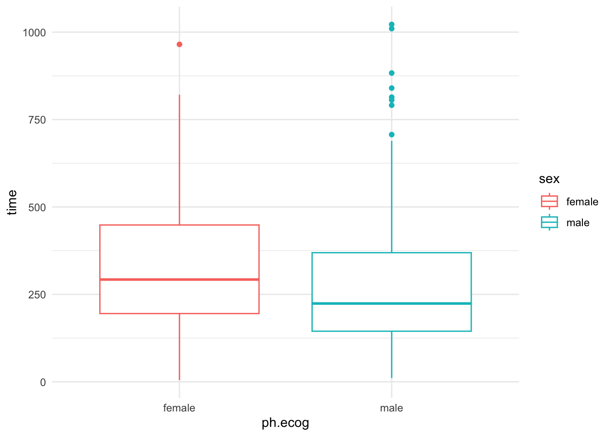
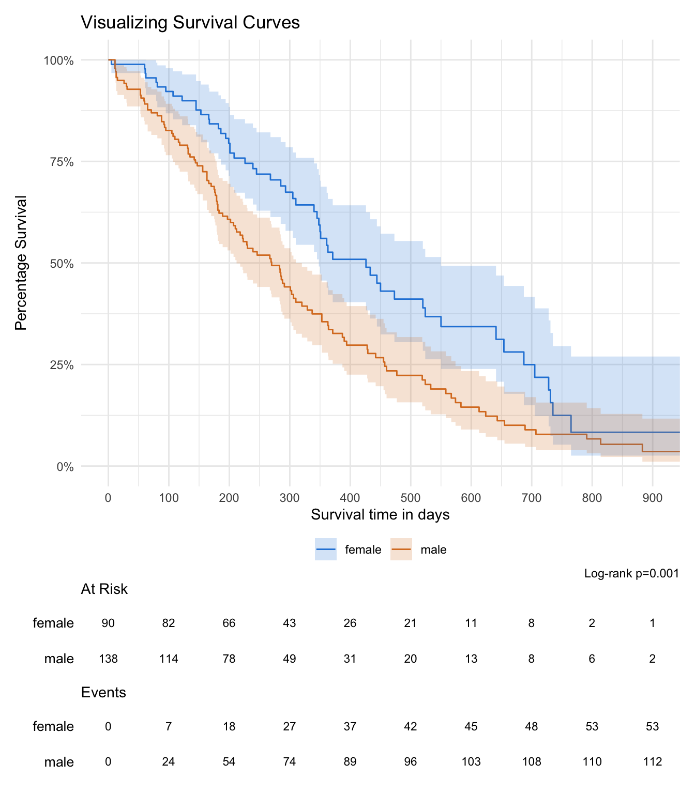

# install.packages("ggsurvfit")Survival Analysis Tutorial with Practical Application in R using the ggsurvfit Package
Introduction:
Survival analysis is a statistical technique used to analyze the time until an event of interest occurs. It is commonly used in medical research, epidemiology, and other fields to study the time to death or failure in a population. In this tutorial, we will explore survival analysis using the ggsurvfit package in R. ggsurvfit is a powerful package that provides an easy-to-use interface for visualizing survival curves and conducting various survival analysis tasks.
Installing Required Packages:
Before we begin, ensure that the ggsurvfit package and its dependencies are installed on your system. You can install the package using the following command:
Let’s load the necessary libraries into our R environment: Loading the Required Libraries:
library(survival)
library(ggplot2)
library(ggsurvfit)Understanding Survival Analysis:
Survival analysis deals with time-to-event data, where the event can be death, failure, recovery, or any other event of interest. The key concepts in survival analysis include: + Survival Time: The time from the start of the observation to the occurrence of the event. + Survival Function: The probability that an individual survives beyond a certain time point. + Hazard Function: The instantaneous rate at which events occur given that the individual has survived up to a specific time.
Preparing the Data:
For this tutorial, we will use the “lung” dataset from the survival package, which contains information about survival times of patients with advanced lung cancer.
lung1 <- survival::lung
str(lung1)'data.frame': 228 obs. of 10 variables:
$ inst : num 3 3 3 5 1 12 7 11 1 7 ...
$ time : num 306 455 1010 210 883 ...
$ status : num 2 2 1 2 2 1 2 2 2 2 ...
$ age : num 74 68 56 57 60 74 68 71 53 61 ...
$ sex : num 1 1 1 1 1 1 2 2 1 1 ...
$ ph.ecog : num 1 0 0 1 0 1 2 2 1 2 ...
$ ph.karno : num 90 90 90 90 100 50 70 60 70 70 ...
$ pat.karno: num 100 90 90 60 90 80 60 80 80 70 ...
$ meal.cal : num 1175 1225 NA 1150 NA ...
$ wt.loss : num NA 15 15 11 0 0 10 1 16 34 ...Exploratory Data Analysis (EDA):
Before diving into survival analysis, it is essential to explore and understand the data. Perform exploratory data analysis tasks such as summarizing the dataset, checking for missing values, and identifying any potential covariates.
lung1$sex <- ifelse(lung1$sex == 1, "male", "female")
# Summary of the dataset
summary(lung1) inst time status age
Min. : 1.00 Min. : 5.0 Min. :1.000 Min. :39.00
1st Qu.: 3.00 1st Qu.: 166.8 1st Qu.:1.000 1st Qu.:56.00
Median :11.00 Median : 255.5 Median :2.000 Median :63.00
Mean :11.09 Mean : 305.2 Mean :1.724 Mean :62.45
3rd Qu.:16.00 3rd Qu.: 396.5 3rd Qu.:2.000 3rd Qu.:69.00
Max. :33.00 Max. :1022.0 Max. :2.000 Max. :82.00
NA's :1
sex ph.ecog ph.karno pat.karno
Length:228 Min. :0.0000 Min. : 50.00 Min. : 30.00
Class :character 1st Qu.:0.0000 1st Qu.: 75.00 1st Qu.: 70.00
Mode :character Median :1.0000 Median : 80.00 Median : 80.00
Mean :0.9515 Mean : 81.94 Mean : 79.96
3rd Qu.:1.0000 3rd Qu.: 90.00 3rd Qu.: 90.00
Max. :3.0000 Max. :100.00 Max. :100.00
NA's :1 NA's :1 NA's :3
meal.cal wt.loss
Min. : 96.0 Min. :-24.000
1st Qu.: 635.0 1st Qu.: 0.000
Median : 975.0 Median : 7.000
Mean : 928.8 Mean : 9.832
3rd Qu.:1150.0 3rd Qu.: 15.750
Max. :2600.0 Max. : 68.000
NA's :47 NA's :14 # Checking for missing values
sum(is.na(lung1))[1] 67# Exploring covariates
# Example: Boxplot of survival time by treatment
lung1 %>%
ggplot(aes(as.factor(sex), time)) +
geom_boxplot(aes(color = sex )) +
labs(x = "ph.ecog", y = "time") +
theme_minimal()
Estimating Survival Curves:
To estimate the survival curves, we can use the survfit() function from the survival package. The survfit() function takes a formula specifying the survival time and an optional grouping variable.
surv_fit <- survfit(Surv(time, status) ~ 1, data = lung1)Visualizing Survival Curves:
The ggsurvfit package provides a convenient way to visualize survival curves using ggplot2. We can use the ggsurvplot() function to create survival plots with various customization options.
# survfit2() calculates the survival curves based on the time and status variables, grouped by the sex variable in the lung1 dataset
# ggsurvfit() creates a basic survival plot using ggplot2
survfit2(Surv(time, status) ~ sex, data = lung1) %>%
ggsurvfit() + # Adds the survival curves to the plot
add_confidence_interval() + # Adds confidence intervals to the survival curves
coord_cartesian(xlim = c(0, 900)) + # Sets the x-axis limits from 0 to 900
scale_y_continuous(
limits = c(0, 1), # Sets the y-axis limits from 0 to 1
labels = scales::percent # Formats y-axis labels as percentages
) +
scale_color_manual(values = c("#2584da", "#da7b25")) + # Manually sets the colors for line colors
scale_fill_manual(values = c("#2584da", "#da7b25")) + # Manually sets the colors for fill colors
theme_minimal() + # Applies a minimal theme to the plot
theme(legend.position = "bottom") + # Sets the position of the legend to the bottom
labs(
title = "Visualizing Survival Curves", # Sets the plot title
y = "Percentage Survival", # Sets the y-axis label
x = "Survival time in days" # Sets the x-axis label
) +
add_risktable(risktable_group = 'risktable_stats', size = 3) + # Adds a risk table to the plot
scale_x_continuous(breaks = seq(from = 0, to = 1000, by = 100)) + # Sets x-axis breaks at intervals of 100
add_pvalue(caption = "Log-rank {p.value}") # Adds a p-value for the log-rank testWarning in ggplot2::geom_blank(): All aesthetics have length 1, but the data has 208 rows.
ℹ Did you mean to use `annotate()`?
All aesthetics have length 1, but the data has 208 rows.
ℹ Did you mean to use `annotate()`?
All aesthetics have length 1, but the data has 208 rows.
ℹ Did you mean to use `annotate()`?
All aesthetics have length 1, but the data has 208 rows.
ℹ Did you mean to use `annotate()`?
Cox Proportional Hazards Model:
The Cox proportional hazards model is widely used in survival analysis to examine the relationship between survival time and covariates. We can fit the Cox model using the coxph() function.
# Fitting the Cox proportional hazards model
cox_model <- coxph(Surv(time, status) ~ age + sex + ph.ecog, data = lung1)
# Printing the model summary
summary(cox_model)Call:
coxph(formula = Surv(time, status) ~ age + sex + ph.ecog, data = lung1)
n= 227, number of events= 164
(1 observation deleted due to missingness)
coef exp(coef) se(coef) z Pr(>|z|)
age 0.011067 1.011128 0.009267 1.194 0.232416
sexmale 0.552612 1.737787 0.167739 3.294 0.000986 ***
ph.ecog 0.463728 1.589991 0.113577 4.083 4.45e-05 ***
---
Signif. codes: 0 '***' 0.001 '**' 0.01 '*' 0.05 '.' 0.1 ' ' 1
exp(coef) exp(-coef) lower .95 upper .95
age 1.011 0.9890 0.9929 1.030
sexmale 1.738 0.5754 1.2509 2.414
ph.ecog 1.590 0.6289 1.2727 1.986
Concordance= 0.637 (se = 0.025 )
Likelihood ratio test= 30.5 on 3 df, p=1e-06
Wald test = 29.93 on 3 df, p=1e-06
Score (logrank) test = 30.5 on 3 df, p=1e-06Conclusion:
Survival analysis is a valuable technique for analyzing time-to-event data. In this tutorial, we explored survival analysis using the ggsurvfit package in R. We covered the estimation of survival curves, visualization of survival plots, and fitting a Cox proportional hazards model. By understanding and applying these techniques, you can gain valuable insights from your survival data. Remember to refer to the documentation and additional resources for more advanced topics, such as handling censored data, stratified survival analysis, and time-varying covariates.